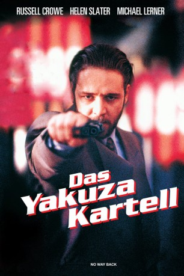

#9861 Das Yakuza-Kartell
Alternativ: No Way Back
 
 IMDB-Wertung: 5.1 / 10
IMDB-Wertung: 5.1 / 10  Metascore: 0
Metascore: 0 
Wer möchte freiwillig in der Haut von FBI Agent Zack Grant stecken? Sein Auftrag ist es, einen zu allem entschlossenen Gangster von New York an die Westküste zu eskortieren. Yuji ist der kaltblütige Chef eines japanischen Waffenschieber-Kartells. Seine Leute sind Zack schon auf der Spur. Der Special-Agent gerät zwischen alle Fronten, denn auch Serlano, der Boss einer rivalisierenden Gang, hat mit ihm noch eine grausame Rechnung offen. Im Kugelhagel seiner Verfolger muß sich Zack zwischen Dienstpflicht und Gewissen entscheiden. Auf welcher Seite steht er eigentlich? Zum Zögern bleibt ihm keine Zeit.
Jahr: 1995
Dauer: 91 Minuten
FSK: 16
Land: USA Studio: Columbia TriStar Home VideoTonspuren:
Untertitel: Deutsch,
Auflösung: 1080p (1920x1040) Größe: 8130 MB
Genre: Action, Thriller, Drama, Krimi
Regisseur: Frank A. Cappello
Drehbuch: Frank A. Cappello
Soundtrack: David Williams
Darsteller:
 Russell Crowe als FBI Agent Zack Grant
Russell Crowe als FBI Agent Zack Grant- Helen Slater als Mary
 Michael Lerner als Frank Serlano
Michael Lerner als Frank Serlano- Kyûsaku Shimada als Tetsuro
 Kelly Hu als Seiko Kobayashi
Kelly Hu als Seiko Kobayashi Ian Ziering als Victor Serlano
Ian Ziering als Victor Serlano- Monty Bane als Goatee
- Christian Keiber als FBI Agent Carl Dundreff
- Patti Davis Suarez als FBI Agent Numeyer
 Caroline Lagerfelt als FBI Agent in Charge Emily Fukes
Caroline Lagerfelt als FBI Agent in Charge Emily Fukes Todd Jeffries als CHP Officer
Todd Jeffries als CHP Officer François Chau als FBI Agent Gim Takakura
François Chau als FBI Agent Gim Takakura- David Barrera als FBI Agent Brodie
- LaRita Shelby als Louise
 Lennie Loftin als Terry
Lennie Loftin als Terry- Claudia Templeton als Bonnie Nueman, CNN Reporter
- Renee Parent als Sam Grant
- Steven Ito als Yakuza Bodyguard
 Al Goto als Yakuza Bodyguard
Al Goto als Yakuza Bodyguard- Tsuyoshi Abe als Yakuza Bodyguard
- Monty L. Simons als FBI Agent
- Clark Hunter als Big Daddy Scalp (uncredited)
- Cheryl Felicia Rhoads als Female Auto Mechanic (uncredited)
- Etsushi Toyokawa als Yuji Kobayashi
 Kristopher Logan als Mr. Contingency, Serlano Henchman
Kristopher Logan als Mr. Contingency, Serlano Henchman- Andrew J. Ferchland als Eric Grant
- Kurek Ashley als Nosering, Serlano Henchman
- John Hammil als 747 Pilot
- Jack Lindine als 747 Navigator
- Walter Eric als Coroner
- Jim Maniaci als Chinscar
- Dan Koji als Gambling Yakuza
- Bill Kyusaki als Yakuza Bodyguard
- Viaclimer Orlov als Scalp
- Charlie Bang als Scalp
- Stephen P. Dunn als Scalp
- Kim Robert Koscki als Scalp
 Charles Grisham als Scalp
Charles Grisham als Scalp- Joe Murphy als Scalp
- Chuck Madalone als FBI Agent
- Red Horton als FBI Agent
- Scott Roberts als Sleuth (uncredited)
Datei: X:\1995\Yakuza-Kartell, Das (1995, FSK16, 1920x1040).mkv seit 03.11.2018
Festplatte: Gemischt-01+Anime
 Es gibt insgesamt 85 Filme in der Gruppe '1995'
Es gibt insgesamt 85 Filme in der Gruppe '1995'